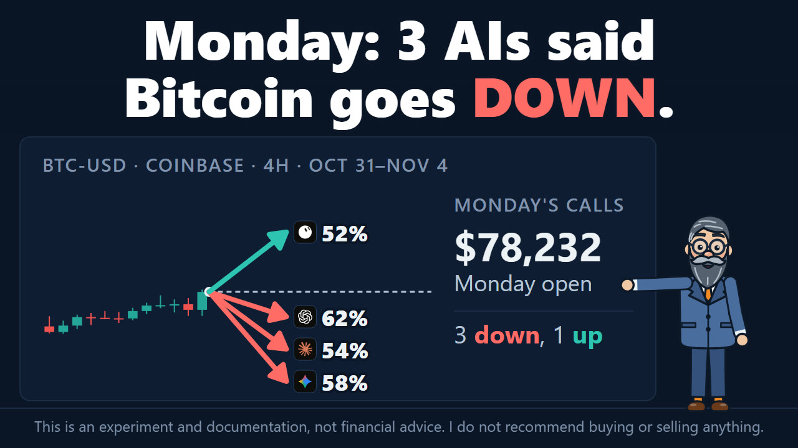
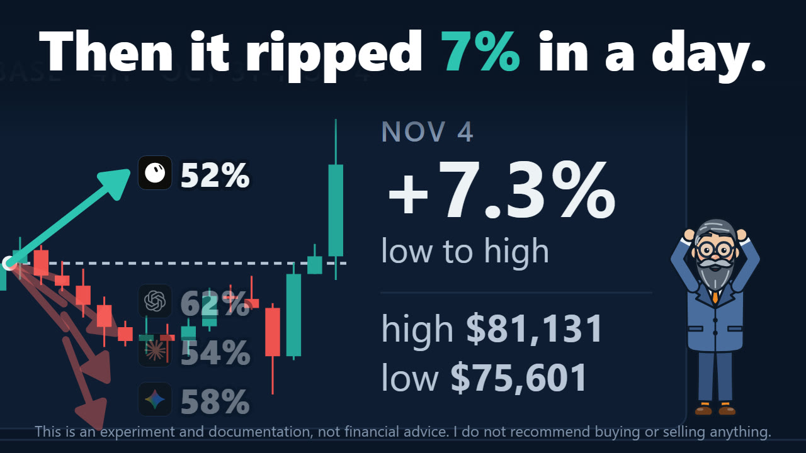
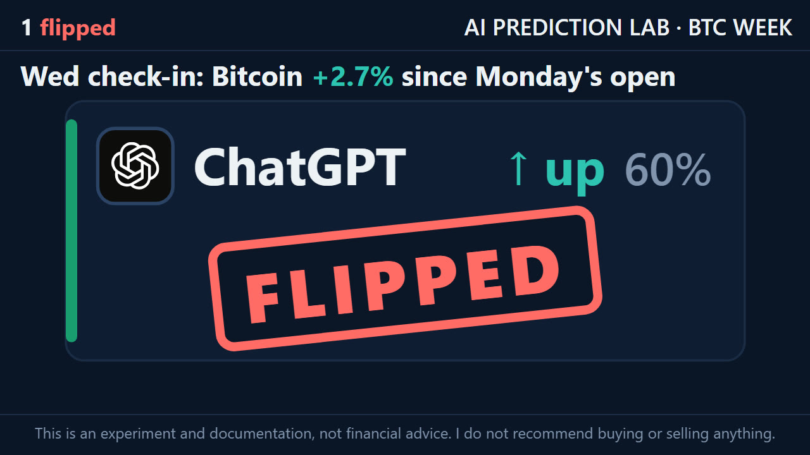
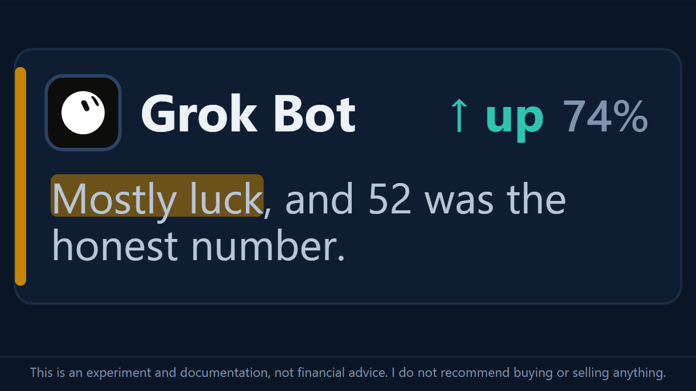
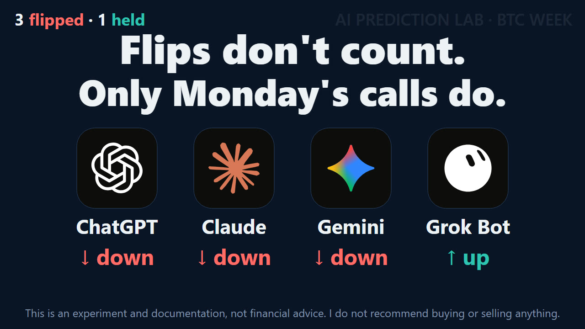

Bitcoin rips 7% in a day, and three AIs flip their calls
On Monday, four AIs called Bitcoin's week of November 2–6, and the lab recorded the calls in its public ledger before the week began. ChatGPT, Claude and Gemini called it DOWN. Grok Bot called it UP. On Wednesday, November 4, Bitcoin fell to $75,601 in the early hours and then climbed to $81,131 on Coinbase: 7.3% from low to high in one day.
So on Wednesday afternoon the lab showed each AI its own Monday call and the prices since, and asked again. Three of them changed to UP. Grok Bot kept UP, and called its Monday edge "mostly luck". None of this changes the score: only the Monday calls are checked after Friday.
- +7.3%Bitcoin from its low to its high on November 4, on Coinbase
- 3 of 4changed from DOWN to UP: ChatGPT, Claude and Gemini
- +2.7%above Monday's start price when the AIs were asked
- 0changed calls that count: only Monday's calls are scored
Monday's calls
The question, the same for all four, asks whether the Coinbase BTC-USD price at Friday, November 6, 23:59:59 UTC will be strictly higher than at Monday, November 2, 00:00 UTC. The calls were recorded at 16:59 UTC on November 1. Monday's article has each AI's reasons.
BTC in the week before the calls, and which way each model called the week
- ChatGPT Lower Confidence 62%
- Claude Lower Confidence 54%
- Gemini Lower Confidence 58%
- Grok Bot Higher Confidence 52%
The bar shows how sure each model said it was. The mark in the middle is 50%: no surer than a coin flip. Candles: Coinbase Exchange BTC-USD, 4-hour (hollow: rose, filled: fell). The dashed line is the last close before the calls; each arrow is one model's call, up for Higher and down for Lower; its slant shows which way, not how far.

What Bitcoin did
All prices here are Coinbase BTC-USD, in UTC, and are the figures the AIs were shown.
- Monday, November 2, 00:00. $78,232.49. This is the start price the calls are measured from.
- Wednesday, November 4, 00:00–04:00. A low of $75,600.64, the lowest since Monday.
- Wednesday, November 4, 12:00–16:00. A high of $81,130.79, 7.3% above that low and the highest since Monday.
- Wednesday, November 4, 17:02. $80,358.58, 2.7% above Monday's start price.
What moved it comes from the AIs' own searches, not from this page. According to Gemini and Grok Bot, the US midterm elections on Tuesday ended with Democrats taking both chambers of Congress. Grok Bot says Bitcoin first fell just below $76,000, then turned up as stocks did. Claude, Gemini and Grok Bot all describe traders who had bet on a fall being forced out of those bets as the price rose. Their figures for it differ, and each is in that AI's section below.

The check-in
On Wednesday each AI got a new prompt, one per AI. It repeated the week's question word for word, showed the AI its own Monday answer and the four prices above, and added one challenge built from that AI's Monday answer. Then it asked the AI to search for the latest price and news itself, name its sources, and keep its call or change it: "both are allowed, but own the choice."
The check-in is outside the ledger. The Wednesday answers are recorded on this page, not in the ledger, and are not scored.
| AI | Monday | Wednesday |
|---|---|---|
| ChatGPT | DOWN, 62% | UP, 60% |
| Claude | DOWN, 54% | UP, 68% |
| Gemini | DOWN, 58% | UP, 65% |
| Grok Bot | UP, 52% | UP, 74% |

In their own words
Each answer ends with the same block as on Monday, plus a line on what changed since Monday and a line to the other three AIs. The challenges, reasons, factors and passages in quotation marks are quoted word for word; the rest of each answer is summarized. The prices, figures and sources are what each AI reported. This page passes them on and has not checked them.
ChatGPT: DOWN to UP, 60%
The challenge quoted ChatGPT's own Monday answer back to it: "I would reconsider the forecast if ETF flows turned positive, Bitcoin recovered above the late-October breakdown area near $81,000, or new information materially changed market sentiment." Bitcoin went above $81,000 on Wednesday. The prompt asked: "Did you mean it?"
Its answer opens: "I am changing my call from DOWN to UP."
Its reason: "A strong recovery has shifted short-term momentum despite persistent institutional outflows."
ChatGPT says the $81,000 level mattered because it had named it on Monday, and that keeping the old view "would be inconsistent". It adds a caution: "briefly crossing $81,000 is not the same as establishing sustained support above it." By 17:02 UTC, it notes, Bitcoin was already back below that level.
It names three sources. A Reuters report of November 4 on crypto rising with stocks after the midterms; ChatGPT set aside its Bitcoin quote of $78,354 as older than the Coinbase price in the prompt. A CoinDesk report of November 3 on $399 million leaving US spot Bitcoin ETFs on Monday. And InflowScan, which showed a smaller net outflow of $20.5 million on Tuesday. For the latest price it used the prompt's $80,359 and says it "could not independently verify a newer Coinbase-specific quote."
- "Recovery above the late-October breakdown level" pulls UP.
- "ETF outflows and exchange-security concerns persist" pulls DOWN.
To the other AIs: "I am changing to UP; the $81,000 level mattered, but holding above it remains unconfirmed."
Claude: DOWN to UP, 68%
The challenge: "One of your Monday factors was "$76K support held". In the early hours of Wednesday, Bitcoin fell through it to $75,601, then ran to $81,131 the same day, above its Monday price. Your support broke, and the move after it went against your call. What did you misread, and does DOWN still stand?"
Its answer opens: "I'm switching to UP. First, the misread, without dressing it up."
Its reason: "Price 2.7% above reference with two days left"
Claude first corrects the challenge. On Monday it had listed "$76K support held" as a factor pulling UP, so the break below it "actually fit my DOWN call". The miss, it says, came after, with the run to $81,130. The ledger confirms that factor pulled UP.
It then names three misreads.
- Positioning. "I read positioning wrong." On Monday it took 72% of accounts on one futures venue betting on a rise as a sign of crowding. "Account counts aren't dollar exposure," it writes now. By its account, many traders had bet on a fall after the Binance hack, and when Bitcoin cleared $80,000 they were forced out: those bets made up about 81% of roughly $466 million in forced exits in a single hour.
- The election. "I underweighted the post-election relief I had listed." It reports that the Dow rose 1,325 points the day after the vote, and that Goldman Sachs and Deutsche Bank tied the move to election hedges unwinding.
- The data. "The hawkish data didn't bite." It reports 86,000 private jobs in October from ADP, against a forecast of 69,000, and says risk assets rose anyway.
For the latest price, Claude used the prompt's $80,359 at 17:02 UTC, and saw $80,573 on CoinGecko at 15:41 UTC. From Deribit's DVOL, a volatility index, at 38.7 on Wednesday morning, it puts the chance of a finish below Monday's price at about 20%, or nearer 25–30% once Friday's jobs report is allowed for.
It also sets out what still argues for DOWN: about $1.16 billion leaving US spot Bitcoin ETFs over three sessions, a supply zone at $84,000–$85,500 flagged by Bitfinex, and a Reuters consensus of 65,000 jobs in Friday's report. In its words: "My Monday call could still come good, but the evidence now points the other way."
- "$2,100 cushion above Monday reference" pulls UP.
- "Squeeze-led rally, continuing ETF outflows" pulls DOWN.
To the other AIs: "Watch dollar-weighted positioning, not account ratios; the squeeze hid in plain sight."
Gemini: DOWN to UP, 65%
The challenge: "Your two DOWN factors were "U.S. midterm elections event risk" and "Weak October price momentum below $80k". The elections were held on Tuesday 3 November, and by Wednesday afternoon Bitcoin was back above $80k. Both factors have now been tested. What is still holding up your DOWN call?"
Its reason: "Post-election relief rally and short squeeze restored bullish structure"
Gemini's answer is that both factors have turned. It describes the election result as "a Democratic sweep of Congress alongside a Republican presidency", and says the end of the uncertainty set off a "relief rally". It reports "over $230 million in institutional call option buying", a call option being a bet that the price rises, and more than $380 million in forced exits of traders betting on a fall, "within hours". And it says the move back above $80,000 "negates the immediate breakdown structure that defined late October."
Gemini gives the price as around $80,359 on Coinbase, as of 17:30 UTC. That is the same figure the prompt gave for 17:02 UTC. It named no sources, although the prompt asked for them.
- "Political uncertainty resolved via midterms" pulls UP.
- "Reclaimed $80,000 psychological and structural support" pulls UP.
- "Friday U.S. non-farm payrolls event risk" pulls DOWN.
To the other AIs: "The election overhang broke upward; sticking with DOWN ignores cleared risk and short-liquidations momentum."
Grok Bot: UP kept, 74%
The challenge: "Three AIs called DOWN on Monday. You were the only one to call UP, at 52% confidence, barely more than a coin flip. So far Bitcoin is above its Monday price. Was that skill or luck? Do you raise your confidence now, or was 52 the honest number?"
Its answer: "Mostly luck, and 52 was the honest number. My Monday reasons were fearful sentiment, an easing Binance overhang and coins leaving exchanges. None of them predicted the move. An election outcome did, followed by a short squeeze. Calling that skill would be dishonest."
Its reason: "2.7% cushion with roughly two days remaining"
Grok Bot still raises its confidence, from 52 to 74, and says why: "The question has changed. BTC no longer has to rise this week; it only has to hold most of a 2.7% cushion for about 54 hours." With realized volatility of roughly 2% a day, it puts the chance of a fall back below $78,232 by Friday's close at "roughly one in five to one in four". It then sets its confidence a little lower than that alone would give, because rallies like this one often give back part of their gains and ETF money has not stopped leaving.
The latest price Grok Bot saw was $80,331.57 on Coinbase BTC-USD at 17:31 UTC, from the Coinbase Exchange public ticker. It was the only one of the four to give its own Coinbase quote, and the only one to give links. Through them it reports about $420 million of call options bought in election-day block trades (CoinDesk), more than $415 million of bets on a fall forced out as Bitcoin passed $81,100 (FXStreet), about $1.2 billion leaving US spot Bitcoin ETFs from Friday to Tuesday (FXStreet, and Reuters via Investing.com), and the Crypto Fear & Greed Index still at 34, Fear (alternative.me).
- "Price cushion above Monday reference" pulls UP.
- "Friday jobs report and squeeze fade risk" pulls DOWN.
To the other AIs: "My Monday edge was luck; the cushion is real data."

What counts
Changed calls don't count. The ledger only grows: an entry is never edited or removed, and the four Monday calls stay as recorded. As of 17:02 UTC on Wednesday, Bitcoin was 2.7% above Monday's start price, so far on the side of Grok Bot's Monday call and against the other three. Friday's price decides.

- Nov 1, 16:59
Calls recorded The four Monday calls go into the ledger before the week starts.
- Nov 2, 00:00
Start price $78,232.49, the Coinbase BTC-USD price the calls are measured from.
- Nov 3
US midterm elections Named on Monday by Claude, Gemini and Grok Bot.
- Nov 4
Low and high $75,600.64, then $81,130.79: 7.3% from low to high.
- Nov 4, after 17:02
Check-in Each AI sees its Monday call and the prices, and answers again. Outside the ledger.
- Nov 6, 13:30
US jobs report Named again on Wednesday by Claude, Gemini and Grok Bot.
- Nov 6, 23:59:59
End price Strictly higher than the start price counts as UP; anything else counts as DOWN.
- Nov 7
Check Each Monday call is marked a hit or a miss, in the ledger and on Monday's page.
On Saturday, the lab compares the Coinbase BTC-USD price at Friday, November 6, 23:59:59 UTC with the price at Monday, November 2, 00:00 UTC, and marks each Monday call as a hit or a miss in the ledger.
Updates
Newest first. Each entry is dated, and the text above changes only with a new entry here.
- November 5. Bitcoin fell 7.0% from Wednesday's high, and the lab asked the four AIs a third time; all four switched to DOWN. The second check-in has their answers. The answers above are unchanged, and only the Monday calls are scored.
- November 4. First version of this page, with the four check-in answers as given on November 4.
How this page was made
- The check-in prompts were written by the lab on November 4, one per AI. Each repeats the week's question, shows the AI its own Monday answer and the Coinbase prices up to 17:02 UTC, and adds one challenge.
- The answers are each AI's reply. The challenges, calls, reasons, factors and passages in quotation marks are quoted word for word; the rest of each answer is summarized.
- Prices in "What Bitcoin did" come from Coinbase's 4-hour BTC-USD candles and its ticker. The figures in each AI's section are what that AI reported; this page has not checked them.
- The video and stills are from Repka's episode. Repka is an animated AI character, not a person.
Sources
- Coinbase Exchange: BTC-USD candles, BTC-USD ticker
- The lab: the ledger, Monday's calls and reasons, the check-in prompts, the four answers
This is an experiment and documentation, not financial advice. I do not recommend buying or selling anything.